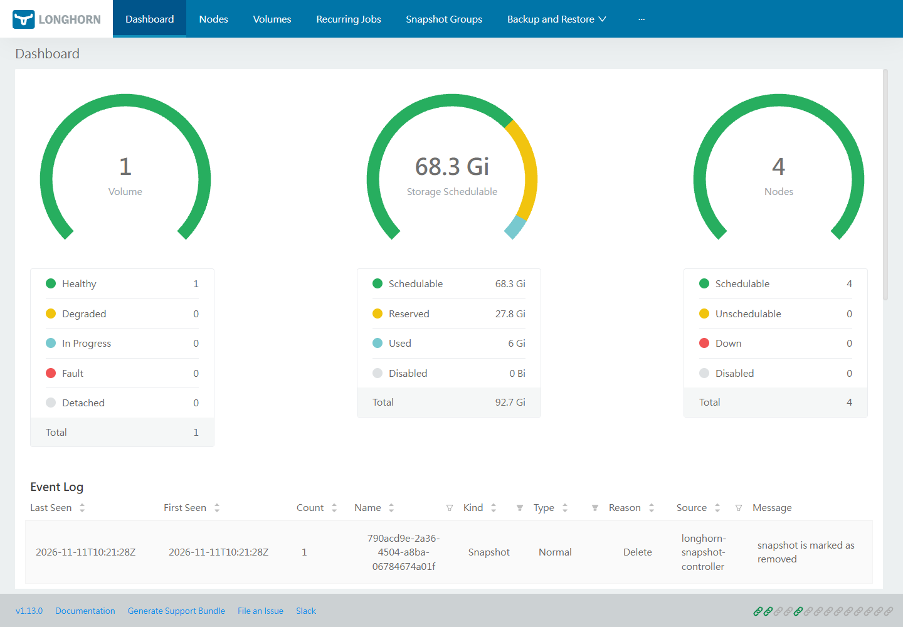
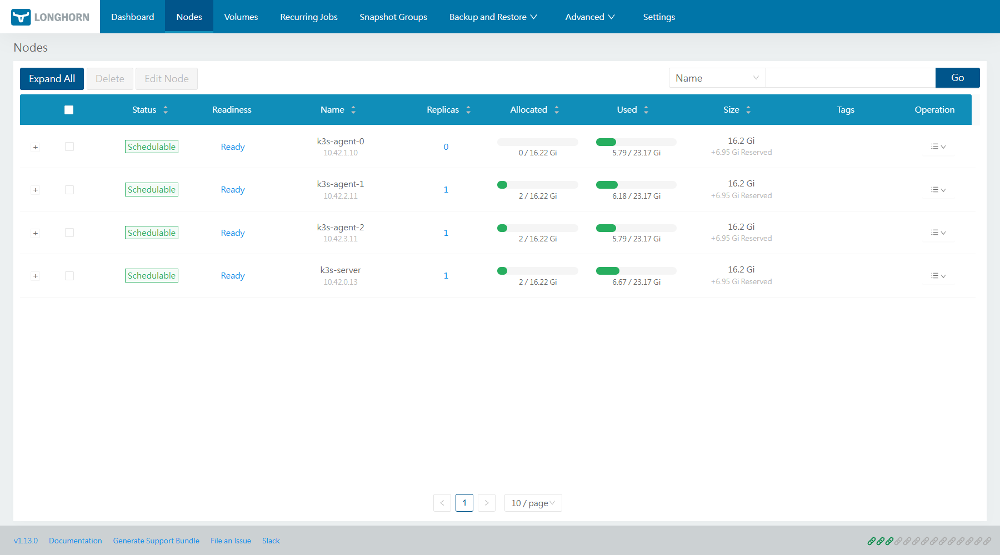
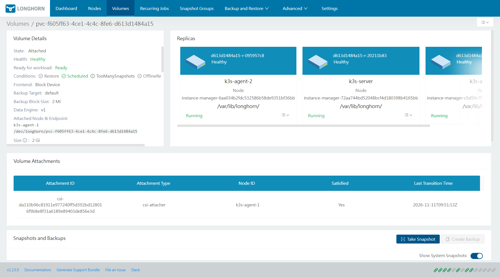
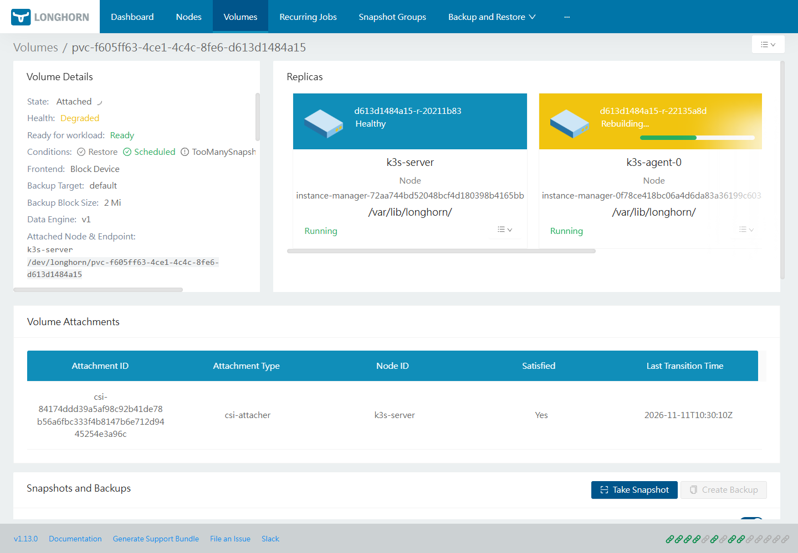
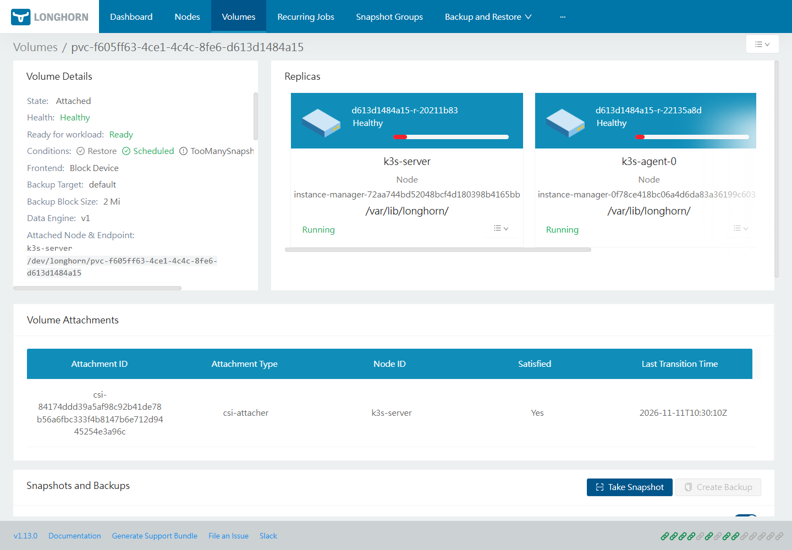

Running Kubernetes on a Windows workstation usually means accepting that the cluster is a toy. This guide does the opposite: four real Ubuntu virtual machines under Hyper-V, a k3s cluster with one server and three agents, and Longhorn providing replicated block storage across all of them.
The end state is a cluster where a PersistentVolumeClaim becomes three copies of a volume on three different nodes, a pod can move to another node with its data intact, and a deleted replica rebuilds itself while the application keeps writing.
Everything below ran on one Windows 10 Pro machine with 12 logical cores, 64 GiB of RAM, and a second disk for VM storage. The commands are the ones that were actually executed, including the failures.
What gets built
| Component | Version |
|---|---|
| Hypervisor | Hyper-V (built into Windows Pro) |
| Guest OS | Ubuntu 24.04.5 LTS cloud image |
| Kubernetes | k3s v1.36.5+k3s1 |
| Storage | Longhorn chart 1.13.0 / app v1.13.0 |
| Cluster shape | 1 server + 3 agents, 2 vCPU / 4 GiB / 25 GiB each |
| Network | Hyper-V internal switch 10.10.10.0/24 + NAT |
The addresses are fixed: server 10.10.10.11, agents 10.10.10.12 through 10.10.10.14, and the Windows host is 10.10.10.1.
Why virtual machines instead of containers
Longhorn is not an ordinary application that happens to store data. It turns each node into part of an iSCSI storage fabric. The node that owns a replica exports an iSCSI target, the node that mounts the volume attaches to it as an initiator, and the kernel on that node presents a block device to kubelet.
That path needs three things on every node: iscsiadm with a running iscsid, a udev daemon that creates /dev/disk/by-path/... entries when a LUN appears, and a real devtmpfs where new device nodes show up. A container built from a minimal image has none of them, and you cannot install a package into an image that ships without a package manager.
Virtual machines avoid the whole class of problem. Each guest is a normal Ubuntu system with its own kernel view, udev, and device filesystem, so open-iscsi behaves exactly as it does on bare metal.
The cost is honest: four VMs at 4 GiB each means roughly 16 GiB of RAM while the lab runs, plus about 25 GiB of disk per node.
Prerequisites
- Windows 10/11 Pro, Enterprise, or Education, with the Hyper-V feature enabled.
- An elevated PowerShell for the switch, NAT, and VM commands.
- Docker Desktop, used only to convert the cloud image and build the seed disks. It is not part of the cluster.
- About 120 GiB free on a data disk, and the Ubuntu cloud image (~600 MiB downloaded).
- An SSH key in
C:\Users\<you>\.ssh\.
Check that Hyper-V is present before starting:
Get-Service vmms
Get-Command New-VM, New-VHD, New-VMSwitch
Step 1: create the private network
An internal switch gives the VMs a network that does not depend on the Wi-Fi adapter, and NAT lets them reach the internet for packages and container images.
New-VMSwitch -Name k3s-lab -SwitchType Internal
New-NetIPAddress -InterfaceAlias "vEthernet (k3s-lab)" -IPAddress 10.10.10.1 -PrefixLength 24
New-NetNat -Name k3s-lab-nat -InternalIPInterfaceAddressPrefix 10.10.10.0/24
Bridging the host's Wi-Fi adapter would remove the NAT step, but wireless bridging under Hyper-V is unreliable. A private switch with NAT is the boring option that keeps working after a reboot.
Step 2: convert the Ubuntu cloud image to VHDX
Ubuntu publishes the cloud image as qcow2, which Hyper-V cannot boot, and Windows has no qemu-img. Rather than installing conversion tools on the host, run the conversion in a disposable container:
docker run --rm -v D:\k3s-lab:/lab alpine:3.20 sh -c '
apk add --no-cache qemu-img >/dev/null
qemu-img convert -f qcow2 -O vhdx \
/lab/images/noble-server-cloudimg-amd64.img \
/lab/images/noble-base.vhdx'
The result is a 3.5 GiB virtual disk. Each VM gets its own copy, resized to 25 GiB before the first boot:
Copy-Item D:\k3s-lab\images\noble-base.vhdx D:\k3s-lab\vms\k3s-server\k3s-server.vhdx
Resize-VHD -Path D:\k3s-lab\vms\k3s-server\k3s-server.vhdx -SizeBytes 25GB
cloud-init runs growpart on first boot, so the root filesystem expands into the new space automatically.
Step 3: build the cloud-init seed disk
The cloud image has no default password. Configuration is delivered on a second disk labelled CIDATA, which cloud-init reads as the NoCloud datasource. On Windows the simplest way to produce that disk is to format a small FAT image with mtools, copy three files into it, and convert it to VHDX:
dd if=/dev/zero of=seed.img bs=1M count=12 status=none
mkfs.vfat -n CIDATA seed.img
mcopy -i seed.img user-data ::user-data
mcopy -i seed.img meta-data ::meta-data
mcopy -i seed.img network-config ::network-config
qemu-img convert -f raw -O vhdx seed.img seed.vhdx
network-config is the part that matters, because there is no DHCP server on the internal switch:
version: 2
ethernets:
eth0:
match:
name: "*"
set-name: eth0
dhcp4: false
addresses: [10.10.10.11/24]
routes:
- to: default
via: 10.10.10.1
nameservers:
addresses: [1.1.1.1, 8.8.8.8]
Two details matter. First, match: {name: "en*"} does not match on this image, because Hyper-V presents a plain eth0; matching everything and forcing the name is reliable. Second, keep a copy of the same netplan document in user-data, remove /etc/netplan/50-cloud-init.yaml in runcmd, and run netplan apply, so the final state does not depend on how the datasource parsed the network file.
A minimal user-data that does the same thing and adds the SSH key:
#cloud-config
hostname: k3s-server
ssh_pwauth: false
users:
- name: ubuntu
groups: [adm, sudo]
shell: /bin/bash
sudo: "ALL=(ALL) NOPASSWD:ALL"
ssh_authorized_keys:
- ssh-ed25519 AAAA... you@workstation
write_files:
- path: /etc/netplan/50-k3s-lab.yaml
permissions: '0600'
content: |
network:
version: 2
ethernets:
eth0:
match: {name: "*"}
set-name: eth0
dhcp4: false
addresses: [10.10.10.11/24]
routes: [{to: default, via: 10.10.10.1}]
nameservers: {addresses: [1.1.1.1, 8.8.8.8]}
runcmd:
- rm -f /etc/netplan/50-cloud-init.yaml
- netplan apply
Step 4: create the four VMs
New-VM -Name k3s-server -Generation 2 -MemoryStartupBytes 4GB `
-VHDPath D:\k3s-lab\vms\k3s-server\k3s-server.vhdx `
-Path D:\k3s-lab\vms\k3s-server -SwitchName k3s-lab
Set-VMProcessor -VMName k3s-server -Count 2
Set-VMMemory -VMName k3s-server -DynamicMemoryEnabled $false
Set-VMFirmware -VMName k3s-server -EnableSecureBoot Off
Add-VMHardDiskDrive -VMName k3s-server -ControllerType SCSI -Path D:\k3s-lab\seed\k3s-server.vhdx
Start-VM -Name k3s-server
Generation 2 requires Secure Boot to be off, because the Ubuntu cloud image is not signed for the default Microsoft UEFI template. Repeat the block for k3s-agent-0, k3s-agent-1, and k3s-agent-2, changing the disk paths, seed disks, and addresses.
Wait for SSH on each one:
ssh ubuntu@10.10.10.11 hostname
Step 5: install k3s and fix the two DNS traps
The first attempt failed at the package step, and the failure is worth understanding:
E: Failed to fetch http://archive.ubuntu.com/ubuntu/... Temporary failure resolving 'archive.ubuntu.com'
The VM could resolve names, but getent hosts archive.ubuntu.com returned only IPv6 addresses and the NAT is IPv4-only. apt tried AAAA first and gave up. Force IPv4 for name resolution and for apt:
echo 'precedence ::ffff:0:0/96 100' | sudo tee -a /etc/gai.conf
sudo apt-get -o Acquire::ForceIPv4=true -o Acquire::Retries=8 update
sudo apt-get -o Acquire::ForceIPv4=true -o Acquire::Retries=8 install -y \
open-iscsi nfs-common curl jq
sudo systemctl enable --now iscsid
sudo modprobe iscsi_tcp
open-iscsi and the running iscsid are what Longhorn will check for later. Do this on all four nodes before installing Kubernetes.
Install the server:
curl -sfL https://get.k3s.io -o /tmp/k3s-install.sh
sudo INSTALL_K3S_VERSION=v1.36.5+k3s1 \
INSTALL_K3S_EXEC="server --write-kubeconfig-mode=644 \
--tls-san=10.10.10.11 --node-ip=10.10.10.11 --flannel-iface=eth0" \
sh /tmp/k3s-install.sh
Then each agent, using the token from the server:
TOKEN=$(sudo cat /var/lib/rancher/k3s/server/node-token)
sudo K3S_URL=https://10.10.10.11:6443 K3S_TOKEN="$TOKEN" \
INSTALL_K3S_VERSION=v1.36.5+k3s1 \
INSTALL_K3S_EXEC="agent --node-ip=10.10.10.12 --flannel-iface=eth0" \
sh /tmp/k3s-install.sh
The second trap appears once the cluster is up. CoreDNS forwards to whatever is in /etc/resolv.conf, and on Ubuntu that is the systemd-resolved stub at 127.0.0.53. Pods cannot reach that address, so every image pull fails with lookup registry-1.docker.io: Try again while curl on the node works perfectly:
sudo systemctl disable --now systemd-resolved
sudo rm -f /etc/resolv.conf
printf 'nameserver 1.1.1.1\nnameserver 8.8.8.8\n' | sudo tee /etc/resolv.conf
Run that on all four nodes, then restart CoreDNS:
kubectl -n kube-system rollout restart deploy/coredns
The cluster should now report four Ready nodes:
NAME STATUS ROLES AGE VERSION INTERNAL-IP
k3s-agent-0 Ready <none> 85s v1.36.5+k3s1 10.10.10.12
k3s-agent-1 Ready <none> 72s v1.36.5+k3s1 10.10.10.13
k3s-agent-2 Ready <none> 59s v1.36.5+k3s1 10.10.10.14
k3s-server Ready control-plane 18m v1.36.5+k3s1 10.10.10.11
Step 6: point kubectl at the cluster from Windows
The kubeconfig that k3s writes on the server points at 127.0.0.1. Copy it out and rewrite the endpoint and context name:
ssh ubuntu@10.10.10.11 'sudo cat /etc/rancher/k3s/k3s.yaml' > C:\Users\C\.kube\k3s-lab.yaml
$c = Get-Content C:\Users\C\.kube\k3s-lab.yaml -Raw
$c -replace '127\.0\.0\.1','10.10.10.11' -replace 'default','k3s-lab' |
Set-Content C:\Users\C\.kube\k3s-lab.yaml
kubectl --kubeconfig C:\Users\C\.kube\k3s-lab.yaml get nodes
The --tls-san=10.10.10.11 flag from the server install is what lets the certificate validate against that address.
Step 7: install Longhorn
helm repo add longhorn https://charts.longhorn.io
helm repo update
helm install longhorn longhorn/longhorn \
--namespace longhorn-system --create-namespace \
--version 1.13.0 \
--set defaultSettings.defaultReplicaCount=3
Longhorn registers each node as storage and creates a default disk at /var/lib/longhorn/:
kubectl -n longhorn-system get nodes.longhorn.io
NAME READY ALLOWSCHEDULING SCHEDULABLE AGE
k3s-agent-0 True true True 3m44s
k3s-agent-1 True true True 3m41s
k3s-agent-2 True true True 2m30s
k3s-server True true True 3m41s
Open the UI through a port-forward:
kubectl -n longhorn-system port-forward svc/longhorn-frontend 8090:80

The nodes page is the one to keep open during the failure tests. Each node contributes roughly 16 GiB of schedulable space, and the replica column shows where the copies live.

Step 8: create a volume and a writer
The workload is deliberately boring: one pod that appends a line every five seconds to a file on a Longhorn claim.
apiVersion: v1
kind: Namespace
metadata:
name: longhorn-demo
---
apiVersion: v1
kind: PersistentVolumeClaim
metadata:
name: records
namespace: longhorn-demo
spec:
accessModes: [ReadWriteOnce]
storageClassName: longhorn
resources:
requests:
storage: 2Gi
---
apiVersion: apps/v1
kind: Deployment
metadata:
name: record-writer
namespace: longhorn-demo
spec:
replicas: 1
selector:
matchLabels: {app: record-writer}
template:
metadata:
labels: {app: record-writer}
spec:
containers:
- name: writer
image: busybox:1.36
command: ["/bin/sh","-c"]
args:
- while true; do
echo "$(date -u +%Y-%m-%dT%H:%M:%SZ) seq=$(cat /data/seq 2>/dev/null || echo 0)" >> /data/records.log;
n=$(cat /data/seq 2>/dev/null || echo 0);
echo $((n+1)) > /data/seq;
sleep 5;
done
volumeMounts:
- {name: data, mountPath: /data}
volumes:
- name: data
persistentVolumeClaim: {claimName: records}
Once bound, Longhorn places three replicas on three different nodes:
NAME STATE ROBUSTNESS SCHEDULED SIZE
pvc-... attached healthy 2147483648

Step 9: prove the data survives a pod move
A replicated volume is only interesting if a reschedule is invisible to the application. Delete the pod and force it somewhere else:
kubectl -n longhorn-demo delete pod -l app=record-writer
kubectl -n longhorn-demo get pod -o wide
The replacement landed on k3s-server, while the volume had been attached to k3s-agent-1. Longhorn detached the engine from the old node, attached it to the new one, and the container found the same filesystem:
NAME READY STATUS NODE
record-writer-7c58c7465c-7gxdc 1/1 Running k3s-server
434 /data/records.log
2026-11-11T09:53:39Z seq=0
2026-11-11T09:53:44Z seq=1
2026-11-11T10:30:57Z seq=433
The counter does not restart at zero. The file that began on one node continues on another, with an 80-second gap while the volume detached and reattached.
Step 10: break a replica and watch it rebuild
Write some real data first. With a nearly empty filesystem the rebuild finishes in a second and there is nothing to observe:
kubectl -n longhorn-demo exec deploy/record-writer -- \
dd if=/dev/urandom of=/data/blob.bin bs=1M count=600
Then delete one replica. Longhorn recreates it and syncs from the surviving copies:
kubectl -n longhorn-system delete replicas.longhorn.io \
pvc-f605ff63-4ce1-4c4c-8fe6-d613d1484a15-r-095957c8
The volume drops to Degraded while the new replica catches up:

The yellow card is the replacement, scheduled on a different node, with a live progress bar. When it finishes, the volume returns to three healthy replicas and the writer never noticed:
NAME STATE ROBUSTNESS
pvc-... attached healthy

NAME NODE STATE
pvc-...-r-20211b83 k3s-server running
pvc-...-r-22135a8d k3s-agent-0 running
pvc-...-r-be9bf363 k3s-agent-1 running
Troubleshooting the failures you will hit
Pods stuck in ImagePullBackOff. kubelet backs off up to five minutes, so a single flaky download keeps the pod failing long after the registry recovers. Check whether the node itself can pull:
sudo crictl pull docker.io/longhornio/longhorn-manager:v1.13.0
If the node succeeds but the pod does not, delete the pod to reset the backoff. If the link is unstable, export the image once from a node that has it and import it on the others:
sudo k3s ctr images export /tmp/im.tar docker.io/longhornio/longhorn-instance-manager:v1.13.0
sudo k3s ctr images import /tmp/im.tar
This is a lab workaround. Production clusters use a registry mirror or a pull-through cache.
Agent logs say not authorized. The token in /etc/systemd/system/k3s-agent.service.env does not match the server's node-token. Rewrite the file with the current token, then systemctl daemon-reload and restart the agent.
The VM boots but has no address. The netplan matcher did not select the interface. Check the actual name with ip -br link, and either match it explicitly or use match: {name: "*"} with set-name.
Longhorn pods crash with an iSCSI error. iscsid is not running or iscsiadm is missing on that node. systemctl status iscsid and iscsiadm --version answer it immediately.
What this lab does and does not prove
It proves the parts that are hard to fake: three replicas on three different nodes, a pod rescheduled to a different host with its data intact, and a deleted replica rebuilt from the surviving copies while the application kept writing.
It does not make this production storage:
- One physical host. If it dies, all four VMs die; replication protects against node loss, not hypervisor loss.
- 25 GiB per node with about 16 GiB schedulable. Longhorn reserves space and refuses to over-schedule.
- No backup target. Snapshots are local to the cluster; without an S3 or NFS target there is no copy that survives the cluster.
- A single-disk filesystem per node, not a dedicated block device per disk.
For production you would run at least three separate physical hosts, give each node a dedicated disk, configure and test a backup target, alert on volume robustness, and document how to drain a node that hosts replicas.
Cleanup
Remove the workload and Longhorn first, then the VMs and the virtual network:
kubectl delete namespace longhorn-demo
helm uninstall longhorn -n longhorn-system
kubectl delete namespace longhorn-system
Get-VM k3s-* | Stop-VM -TurnOff
Get-VM k3s-* | Remove-VM
Remove-Item D:\k3s-lab -Recurse
Remove-NetNat -Name k3s-lab-nat
Remove-VMSwitch -Name k3s-lab
Takeaways
- Longhorn is host-level storage: the initiator, udev, and device nodes must exist on the node, so the node has to behave like a Linux host.
- A private Hyper-V switch with NAT is more dependable than bridging a Wi-Fi adapter, and it keeps the lab addresses stable across reboots.
- Ubuntu's
systemd-resolvedstub breaks CoreDNS in a k3s cluster unless you replace/etc/resolv.conf, and the symptom looks like a registry outage. - Replication is only credible when you delete something. A replica rebuild with a visible progress bar and an application that keeps writing is better evidence than a green status icon.